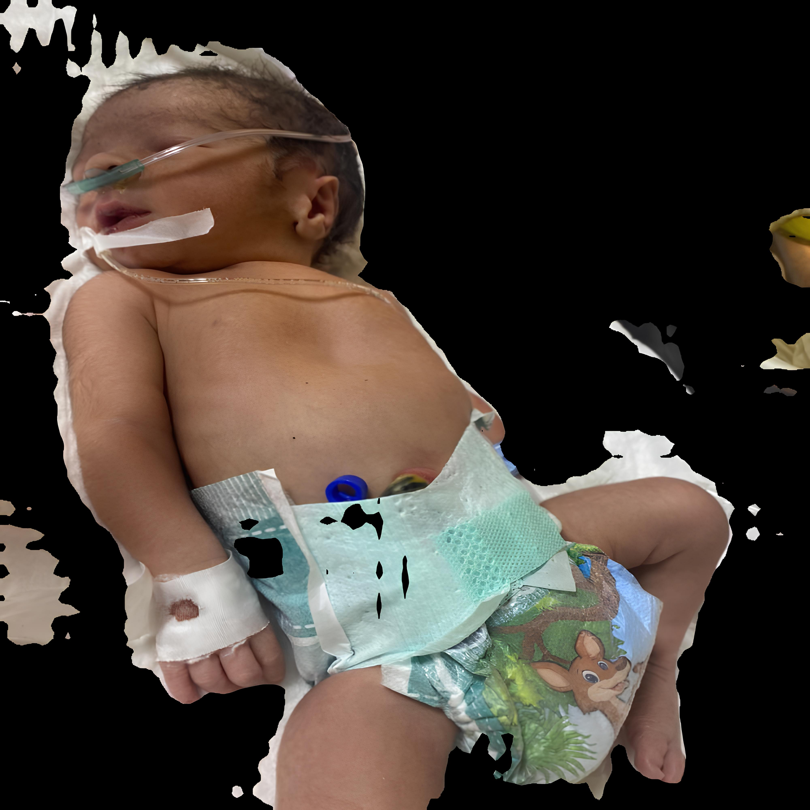
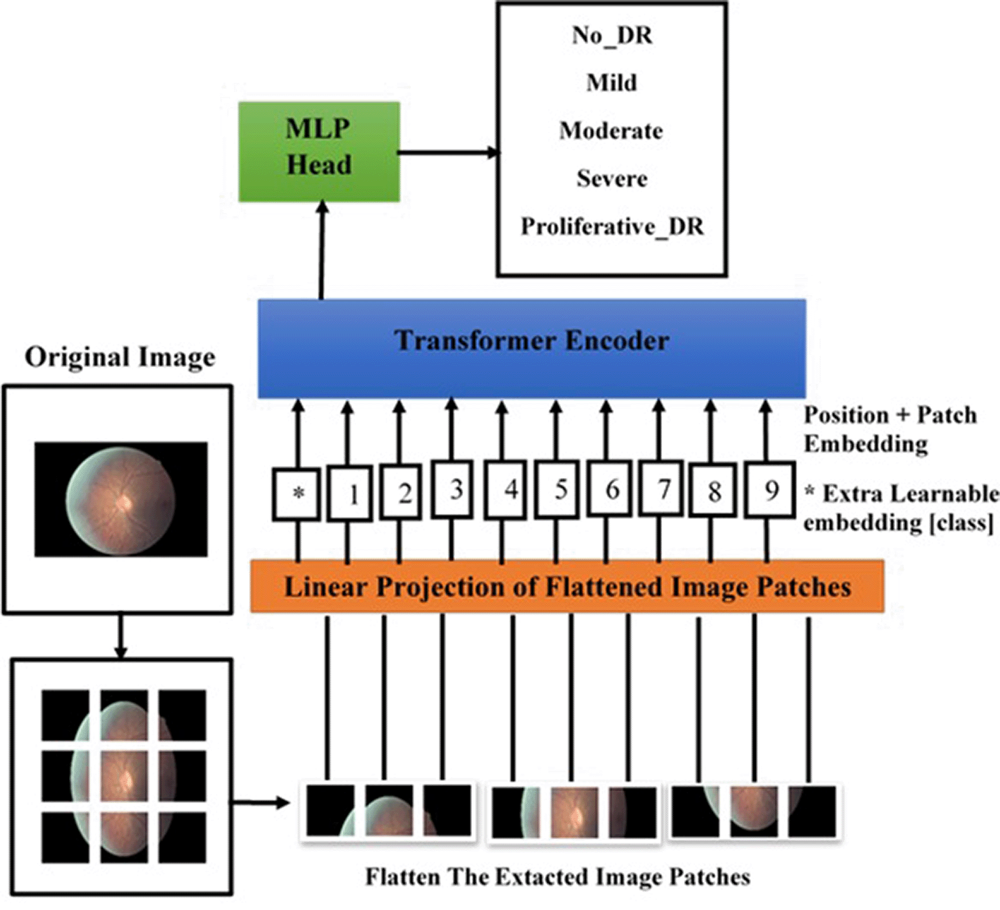
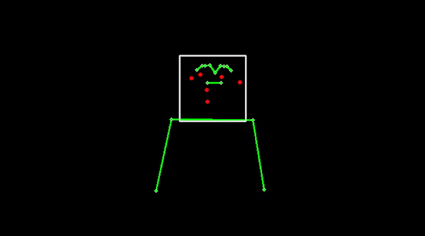

About Me
Kartikya Gupta is a Computer Science Engineering graduate from BITS Pilani. He has solid professional experience, currently working as an Intern Data Scientist at Valiance Solutions. His technical skills include proficiency in C++, Python, LaTeX, and more.
Education
BITS Pilani
Bachelor of Engineering in Computer Science
2020 - 2024
Experience
Intern Data Scientist
Valiance Solutions
Jan 2024 - Aug 2024
Noida, India
- Published paper "Smart Screening: Non-Invasive Detection of Severe Neonatal Jaundice using Computer Vision and Deep Learning" in the International Journal of Computer Applications.
- The International Journal of Computer Applications (Q2, IF:1.15, h-index:23, SJR:0.41) is a peer-reviewed journal known for publishing research on all aspects of Computer Science, Computer Engineering, and Computer Applications.
Undergraduate Researcher
BITS Pilani
Aug 2022 - Dec 2023
Dubai, UAE
- Developed deep learning algorithms on edge computing devices, leveraging GPUs and TPUs to enhance real-time processing capabilities.
- Collaborated with professors and peers on diverse research projects, gained experience in research design, data analysis, and academic writing.
- Integrated advanced computer vision and deep learning techniques to improve image and signal processing, optimizing performance in various applications.
Publications

Smart Screening: Non-Invasive Detection of Severe Neonatal Jaundice Using Computer Vision and Deep Learning
Kartikya Gupta, Vaibhav Singh, Shailendra Singh Kathait
International Journal of Computer Applications
Projects

Retinal Disease Classification
- Created custom GANs for image replication, increasing our dataset from a few tens to thousands of images for the task of multi-class classification.
- Implemented a custom vision transformer model for multi-class classification of retinal disease; namely four classes: normal, mild, moderate and severe.
- Model was able to identify miniscule identifiers invisible to a naked human eye, resulting in 99.2% disease detection rate across all stages.

Sign Language Generation
- Developed a real-time American Sign Language generation system using advanced multimodal deep learning models with a 2D character.
- Our system can yield 2000 sign language gestures from spoken language, contributing to improved accessibility and communication for the hearing-impaired.
- Integrated 96.7% accurate speech emotion recognition (SER) model for 8 emotions to increase the 2D model's expressiveness.

Language Style Transfer
- Our NLP course involved a 24-hour challenge to develop a model capable of changing the style of any formal text to informal and humorous.
- Developed a model capable of effectively transferring language styles between formal, casual, and humorous expressions.
- Achieved the highest BLEU score in the class, securing the first position in the challenge.